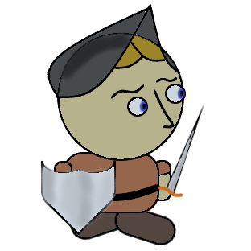
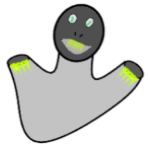

Disclaimer
I won't claim that my API is 100% bug-free, but I will hold myself responsible for fixing any bugs you find. Please email me concerning any bugs you find. Include the error message and line number where the error occurred. If possible tell me what you were doing which caused the bug. I need to know how to reproduce it in order to fix it. Thanks.
Link
You can link your page directly to the script at goldfield.js
Non-game Example
This example page shows many of the features of the API so that you can become familiar with them.
GoldField Object
The GoldField sets up the playing field and tracks all the movers. It is capable of randomly adding as many as you like, but will reject too many Movers.
Constructor
- GoldField(tag, block_size, block_width, block_height)
- Generated a GoldField object which can be used to create and control the rest of the program. The calling function can supply any DOM tag as the basis for the game. Gold field will resize it into a block_width-by-block_height field of squares which are block_size-by-block_size. This makes the initial size of the game completely customizable.
Event Functions
- SetClickListener(func)
- This method connects the onclick event for GoldField to the given function. This is the approved method for getting mouse events from the API.
- SetKeyListener(func)
- This method connects the onkeyup event for GoldField to the given function. This is the approved method for getting key events from the API.
Membership Functions
- Reset()
- Clears all movers from the board and returns it to the original state.
- RandomFill(percent)
- Adds random Obstacles to a percentage of the board. 0 < percent ≤ .25
- GetMover(id)
- Finds and returns the Mover with the given ID value. Returns null if the Mover is not found.
- AddHero()
- Adds the Hero to a random location on the board. Only one Hero can be added. Returns a reference to the Hero.
- AddMonster()
- Adds a Monster to a random location on the board. Returns a reference to the Monster.
- AddGold()
- Adds a bar of Gold to a random location on the board. Returns a reference to the Gold.
- AddTower()
- Adds the Tower to a random location on the board. Only one Tower can be added. Returns a reference to the Tower.
- AddObstacle()
- Adds a random Obstacle to a random location on the board. Returns a reference to the obstacle.
- CreateMoverTag()
- Adds a new Mover tag to the GoldField and returns the id of the Mover.
- AddGenericMover(obj)
- Adds the new user-defined Mover to the GoldField's controls. NOT DOING THIS CRITICAL STEP WILL RESULT IN A TAG ON THE SCREEN WHICH DOES NOT RESPOND TO CRITICAL FUNCTIONS (e.g. Reset).
- DeleteMover(id)
- Silently removes the Mover from the board. This operation removes the tag quietly rather than having it die dramatically and loudly.
Location Functions
- GetDimensions()
- Returns an ordered pair with the size of the board [width,height].
- LookAt(x,y)
- Returns a pair of values describing the contents of the indicated cell: [id,description]. The position must be within the bounds of the field.
Sound Functions
- AddSound(url, name)
- Add any sound to the game by supplying the URL to the sound file and a string description for the sound. Ex. gf.AddSound(someNewSound.wav, "NewSound")
- ChangeSound(url, name)
- Change the sound file used for any existing sound.
- PlaySound(name)
- Directly play any sound.
- GetSound(name)
- Returns the sound object with the given name.
- GetSoundList()
- Returns a list of all the sounds defined in the game.
- SetMute(muted)
- The sounds of the game can be muted. Set true to turn them off and false to turn them on.
- Win()
- Plays the victory fanfare.
- Lose()
- Plays the Hero's funeral march.
Mover Objects
Each mover has a unique ID number and a description of the mover. They are initially located randomly, but you can move them around if you want.
- myID
- Unique identifier
- Description
- String describing the type of Mover.
- imageURL
- The image normally displayed by the mover.
- destroyURL
- The image you want to be displayed when it is destroyed.
- destroyAudio
- The sound you want to play when the tag is removed. The "none" sound is an option.
- destroyTime
- How long you want the tag to be in destroy mode before it is removed.
- InitTag
- Finds the basic mover tag and initiates it using the type-specific details.
- GetPosition()
- Returns an ordered pair [x,y] of the mover's current position.
- Destroy()
- Causes the mover to die dramatically and loudly. This is part of the game and not a silent reset. Be aware that there is a delay in the destruction of these objects (for graphic visualization) and that you cannot add new versions of some figures (e.g., the Hero) until the old one is completely destroyed.
- SetPosition(x,y)
- Accepts a new location for the mover and returns true if successful. Certain restrictions apply:
- The position must be within the bounds of the GoldField
- The position must be empty. While a Monster and Hero can kill each other, they can't occupy the same space.
Specific Mover Types
- Hero 
- This is the main character who will be controlled by the user. Presumably we want to keep him alive. The API assumes we only have one of him.
- Tower

- The tower is optional, but there can only be one of them. Presuably the tower is some sort of goal, but it could be used for almost any purpose.
- Monster 
- Monsters are presumably the bad guys. The certainly make mean noises when they blow up.
- Gold
- Gold could be used to keep score or reward the player. Maybe this is how you end the game.
- Obstacles
- Obstacles can be added randomly to the terrain as a percentage of the total field (less than 25%) or added one at a time. There are three varieties.
- Rock

- Rocks just block the player from getting through. I guess you could destroy them, but why would you?
- Water

- Water hazards also block the player. You might be able to attack over these. Could they be destroyed?
- Plant

- Plans also block the player. Might they be destroyed to get gold? Maybe to clear the way.
Adding to the API
The API can be added to pretty easily. Basically you are adding a new method to the GoldField object (yay! for prototypes) and creating a new type which extends the Mover prototype. The code below is a template which you could use to create anything you want in the GoldField game.
//create a new sound you might want
goldField.AddSound("soundURL","soundName");
//this method is added to GoldField so it can add the new type
GoldField.prototype.AddUserDefinedType = function()
{
var id = this.CreateMoverTag();
var udt = new UserDefinedType(id);
this.AddGenericMover(udt);
return udt;
}
//this is the constructor for the new type
var UserDefinedType = function(id)
{
this.Description = "UserDefinedType";
this.imageURL = "imageURL";//this needs to be an actual image url in your code or on the web
this.destroyURL = "destroyURL";//this needs to be an actual image url in your code or on the web
this.destroyAudio = "soundName";//sets the name of the sound file
this.destroyTime = 1000;//set the time you want for any animation or sound before the tag is destroyed.
this.InitTag(id);
}
UserDefinedType.prototype = Object.create(Mover.prototype);//makes that type a mover
UserDefinedType.prototype.constructor = UserDefinedType;//sets the constructor for that type
Acknowledgements
The images and sounds which are used in this API have been taken directly from the web. My thanks to those who provided their intellectual property online for the free use in an academic setting.
- http://soundbible.com/
- http://www.zedge.net/
- Mike Koenig
- http://texturelib.com/
- http://inkwellideas.com/
- http://photobucket.com
- Unka Dug
- http://the-king-of-towers.wikia.com/
- http://ztreasureisle.wikia.com/
- http://farmville.wikia.com/
- http://thepioneertrail.wikia.com/
- http://www.clipartbest.com/
I also gratefully acknowledge mrdotb who assisted me with a critical bug which affected several locations in the code. See the discussion on stackoverflow.